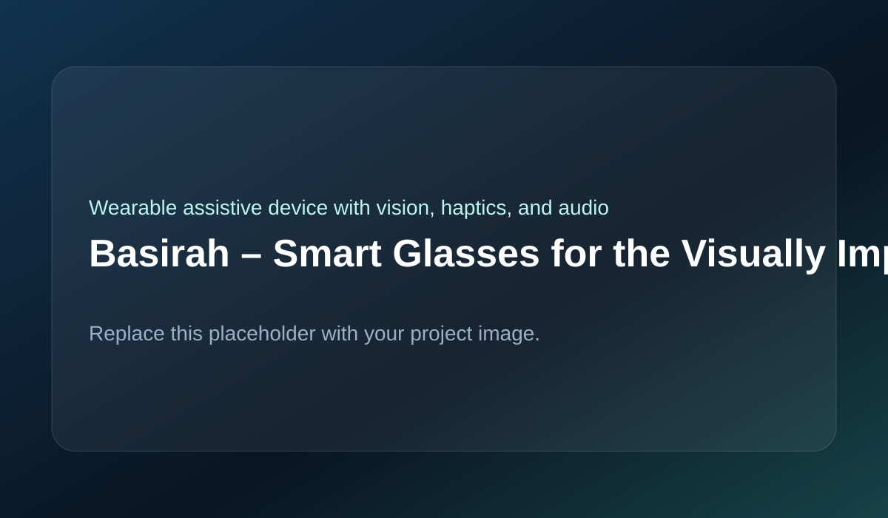

Developed a wearable assistive device that improves environmental awareness for visually impaired users through computer vision, distance sensing, haptic alerts, and bone-conduction audio.

The system is built around a perception layer with a camera module for image capture and on-device inference for face recognition, object detection, and text recognition. A distance sensing layer monitors nearby obstacles using forward-facing sensors. Feedback is delivered through bone-conduction audio and haptic actuators. Processing and control hardware coordinates vision inference, sensor reading, and multimodal feedback generation.
On-device processing was chosen to improve privacy, remove network dependence, and increase reliability. Bone-conduction audio preserves ambient sound awareness while still providing guidance. Haptic feedback was added to reduce cognitive overload from audio-only interaction. Sensor placement was kept modular and compact to fit a wearable eyeglass structure.
The main challenges included balancing processing power with wearable size, managing heat dissipation, maintaining stable vision performance across varying lighting conditions, minimizing latency from detection to feedback, handling power for longer operation, and integrating multiple sensors mechanically into the frame.
The final prototype demonstrated real-time on-device object and face recognition, obstacle distance detection with tactile alerts, multimodal audio-plus-haptic feedback, and functional assistive capability without cloud connectivity.